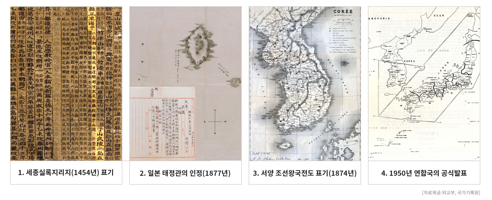

1. 세종실록지리지(1454년) 표기
2. 일본 태정관의 인정(1877년)
3. 서양의 조선왕국전도에 표기(1874년)
4. 1950년 연합국의 공식발표
동서양을 막론한 독도가 대한민국 영토라는 주장을 뒷받침하는 수많은 증거 자료들~!

인라인 요소가 블럭요소를 자식으로 가진 경우 : 유효성 검사에서 에러 발생
html5 버전에서는 앵커태그가 블럭 요소를 자식으로 가진 경우 : 문법적 오류에 해당되지 않는다.